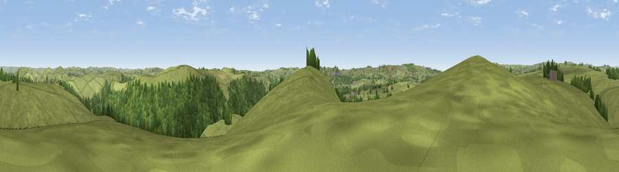

Viewpoint near Waterfall
#28159 in England · top 46% of its area beats it · near WaterfallThe view, rendered

A 360° render of this exact spot computed from the terrain model, tree cover and land cover — summer colours, afternoon light, calibrated against photographs of famous viewpoints. Real trees, hedges and buildings will differ in detail.
The panorama
Grey silhouette: terrain skyline in each direction (720 bearings, Earth curvature and refraction included). Dashed green: skyline with trees (+15 m) and buildings (+8 m) as obstacles. Blue strip: how far the ground is visible on each bearing.
Where the view opens
Wedge length = distance to the farthest visible ground on that bearing (vegetation-aware). Rings at 10, 25 and 50 km.
What fills the view
74% grassland · 25% woodland
Angular shares of the visible panorama (visual magnitude), not map area. Landscape diversity 0.27 (0–1 Shannon).
Key numbers
More beautiful places nearby
The staircase of upgrades: each row has a higher view potential than everything closer. Driving times are estimates from straight-line distance, calibrated against real road routing — check an actual route before setting out.
| Place | Direction | Drive | Score |
|---|---|---|---|
| Viewpoint near Waterfall | S · 1 km | ~2 min | 45.5 |
| Soles Hill | ESE · 1 km | ~3 min | 54.7 |
| Musden Low | SE · 4 km | ~10 min | 67.7 |
| Viewpoint near Cauldon Lowe | S · 6 km | ~12 min | 71.9 |
| Viewpoint near Wootton | S · 6 km | ~14 min | 74.8 |
| Tissington Hill | E · 6 km | ~14 min | 75.5 |
| Viewpoint near Mow Cop | WNW · 23 km | ~38 min | 78.9 |
| Viewpoint near Mow Cop | W · 23 km | ~38 min | 80.2 |
53.07259, -1.87272 · source: screening · position refined by local search. Computed location — check access rights before visiting.